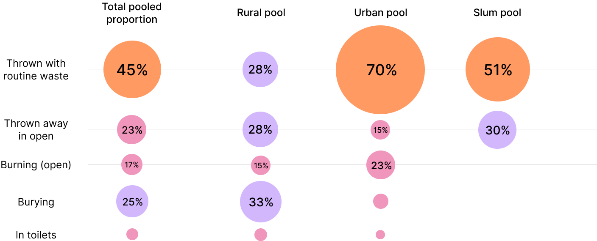

Poppy is a sustainable product-service system offering sanitary napkins on subscription and ensuring a responsible disposal of the soiled napkins. It addresses the environmental impact of the menstrual waste along with the dogmas, inconvenience and shame related to menstruation.

Out of 336 million menstruating women in India, about 36% i.e. 121 million women use sanitary napkins. Assuming every woman uses 8 pads per cycle, around 1 billion pads are used every month. That is, 12 billion pads a year.
Most of the sanitary pads in the market have Super Absorbent Polymer (SAP) and take 500-800 years to decompose.

Menstrual waste disposal practices among females vary depending on -
socio-economic factors: occupation, education, income, wealth, area of residence (urban, rural, semi-rural)
cultural factors: beliefs and taboos associated with menstruation and menstrual blood


Menstrual waste practices among women in India are haphazard. Following shows the statistics of various waste disposal practices in urban, rural and slum population in India.
Intimate affair of buying and disposing pads
Need an understanding of different kinds of sanitary pads available
A fellow woman with whom they can interact about their problems
A reminder about their menstrual cycle
Easy, convenient period days
Let’s look at the journey of these women when they are unaware about their incoming periods.

Strengths
Feminine hygiene products market in India is expanding at a 15% rate.
Uniformity in commercial product sales - 99% is disposable pads.
Menstrual supplies are Fast-Moving Consumer Goods (FMCG) and used every month by women aged 12-50 years.
There is increased awareness, growing number of working women and risen literacy rates.
Weaknesses
Lack of responsible disposal practices.
Presence of men while buying pads can be uncomfortable.
Women don’t like to explore options other than commercial disposable product.
The taboos related to periods still exist even in well-off houses.
Opportunities
With dedicated subscription schemes, women may find convenience in procuring pads.
Women may sell menstrual products to women, creating fellow feeling and the information transfer can be as intimate as desired.
There is scope in building a model around responsible disposal of menstrual waste.
Development of eco-friendly products such as pads from natural fiber is a sustainable option to advance in this market.
Threats
Taboos and witchcraft associated.
Engagement of men in the model may cause hindrance in intimate and comfortable information transfer.
Girls face harassment and social exclusion during menstruation which compels them to adopt traditional feminine hygiene products.
"Difference in culture among different parts of India.

Going with the dealer-customer trade can not only help in intimate information transfer and easy procuring of sanitary napkins but also lead to bonding between women over menstrual problems, building a healthy environment.
However, dealers might have to be trained a little. Maybe this can be done at a nearby centre where they are given the supplies for sale.
Segregating and disposing pads in a more responsible way may not be a customer need, but is an environmental necessity.
Concern - How to separate soiled pads from general waste?
Considering pick-up of pad waste to be the most feasible solution as different waste collection methods are used in different areas, here are a few concerns:
Stealth disposal, stealth periods - women would not separate the waste as it may get visible to others, being shameful about periods.
Animal mess - if waste is kept separated outside, dogs, rats might create a mess of the soiled napkins.
Filth and odour - women may not like to handle the soiled napkin to keep it separate for pick-up.
Camouflaging the dustbins for menstrual waste (soiled pads + pad wrapping material)
This would ensure - one, easy pick-up by collection agents as waste would be already segregated and two, a stealth disposal.
The bin could be camouflaged as an object kept outside the house as -
Planter
Grocery bag
Dustbin
Shoe rack
Letter box
However, a dustbin is something that all houses have; it is as filthy as the waste concerned and it can be kept away from the family’s interest easily.
Waste can be collected by collectors and incinerated in the collection vehicle itself, specially in areas of high waste collection demand. This will shrink waste volume, transportation could be carried out in smaller vehicles and health hazard could be reduced considerably.
However, we can drastically reduce carbon footprint and create a circular economy by transforming the waste rather than incinerating it.
An article by Saral Designs and a patent by Bert Steffens suggests that disposable sanitary pads can be recycled to obtain cellulose and plastic. From 1 ton of used pads, approximately, 75 kg plastic and 225 kg organic-cellulose material can be obtained.
Obtained plastic can be used to manufacture dustbins or packaging, while cellulose can be used to manufacture reminders as calendars for women users.
Considering the dealer-customer trade, user needs, disposal and treatment of waste, we can attempt designing the system.
Customers have 2 ways of buying - via dealers and through app. When subscription or purchase is made using the Poppy app, the order will be delivered by the nearest dealers from the location of order. Dealers can acquire the sales supplies from a collection centre, where women will also train them for the work.
Customers can notify their dealers or on the app for waste pickup. They can be provided incentives for submitting soiled pads like one new pad for every 5 used pads. Final information will be transferred to the waste collectors who can collect waste in the customer’s menstruation period.
The collected waste can be incinerated in the collection vehicle and sent to a transformation facility to obtain plastic pellets and cellulose, which can be used in packaging and to make calendars given to all customers/dealers to track their periods.


Awesome Actors Tool helps us understand the needs, aspirations, motivations and challenges faced by the various actors involved in the system.

Value Opportunity Analysis is an actor-centric model to help gauge the needs of the actors.


Carlo Vezzoli & Ursula Tischner‘s Sustainability Design-Orientation Toolkit takes into account environmental, socio-ethical and economic factors into consideration to discuss the sustainability of a product-service system. It can be found here: SDO Toolkit.
Calendars and/or dustbins can be given with first subscription orders.
A lid-dustbin may be upgraded to a pedal-dustbin at some nominal price.
One subscription can be of multiple different products.
Subscriptions would cost lower than individual packs.
To engage dealers, we can further subsidize their subscription plans.
To promote giving of soiled napkins to us, women can be given discount codes for every 5 pads given.
Since women are very cautious and hesitant to try novel things when it comes to menstruation, word-of-mouth will be the best way to promote. Alongwith, mother-daughter seminars in school regarding menstrual health can be arranged where Poppy is promoted.
There can be a referral feature on the app too.
Old dustbins can be exchanged for new, partitioned ones. Calendar with red stickers can be provided to mark the onset of periods every month.
The app can also have educational content on menstrual health.


Thank you for scrolling till the bottom!
Concluding a really long study, I would like to mention the scope of executing the service. Periods are natural and perpetual. After discussing with several women in my user research sessions, I realized how excited women can be when it comes to entreprenuership. They accept that there is room for change of lifestyle, broadening of their mindset and bringing a change. They are ready to be that change. There is immense scope for bringing to life this project. Further, this project can be extended to diapers as well.
As I talked to people, researched and studied, I did get culture shocks. However, it was beautiful to see that women are experimental. There are a lot of things that can be layered upon this model. But while initiating, warding off the taboo and hesitance among women is of utmost importance.